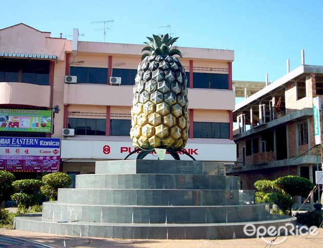

My Hometown, A Small Hometown.
Hello everyone, I am Jie Ting.
My hometown is Pekan Nanas
Actually, many people don’t know where Pekan is.

This is my hometown. Pekan Nanas is in Pontian area.
Pekan Nanas also called as The Pineapple Town in Johor.
It is because Pekan Nanas produces a lot of pineapples that are very sweet and very delicious.
Although Pekan is far away from the city and it takes an hour’s drive, I still like my hometown very much.
My hometown is a peaceful countryside, and the environment is very comfortable.
I often hear the sound of chickens and ducks.

This is a very big pineapple in my hometown.